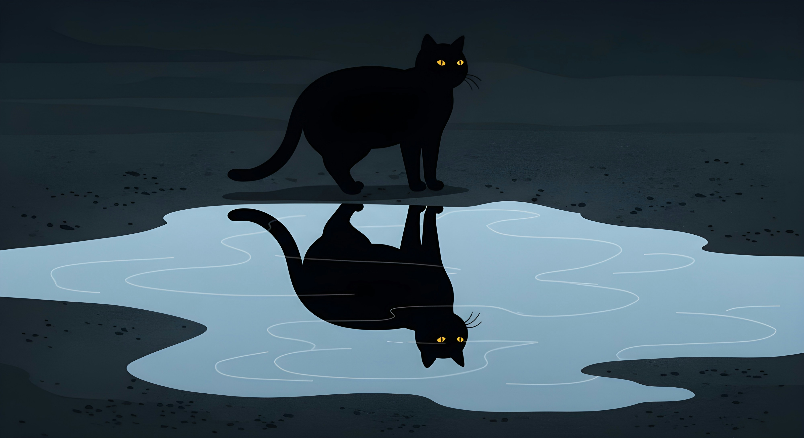
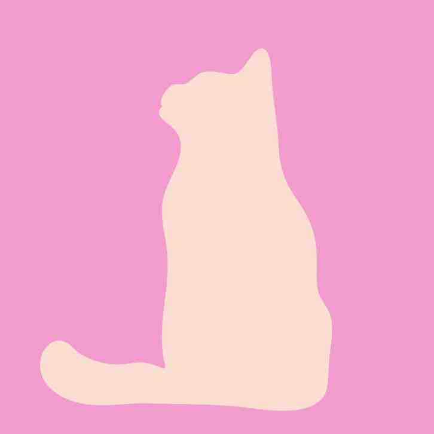
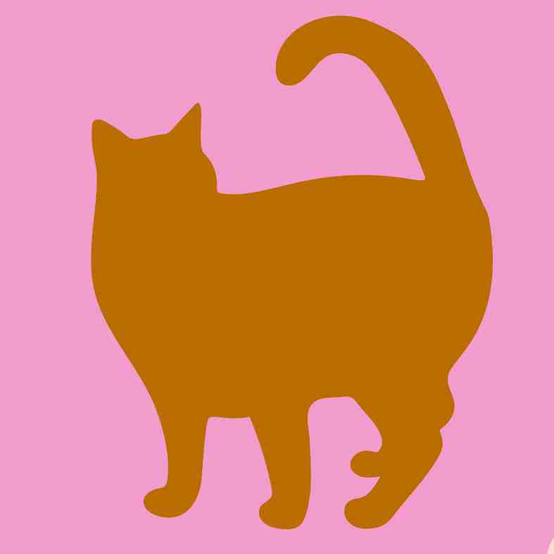
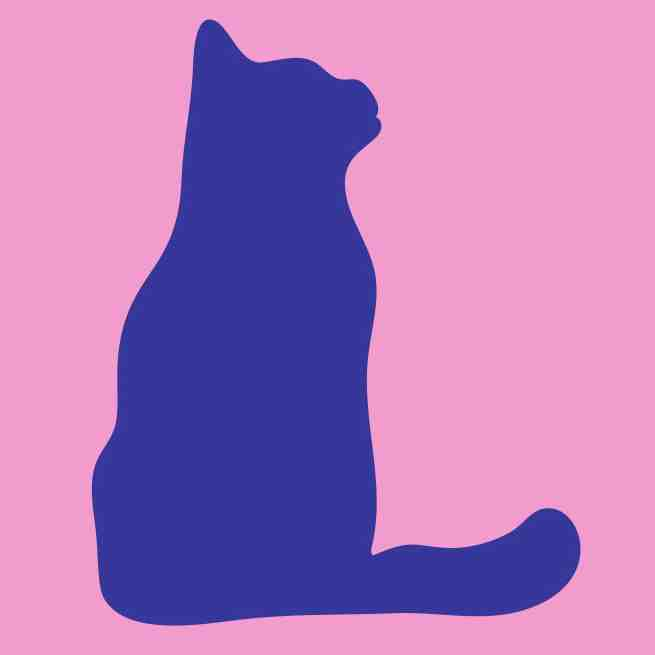
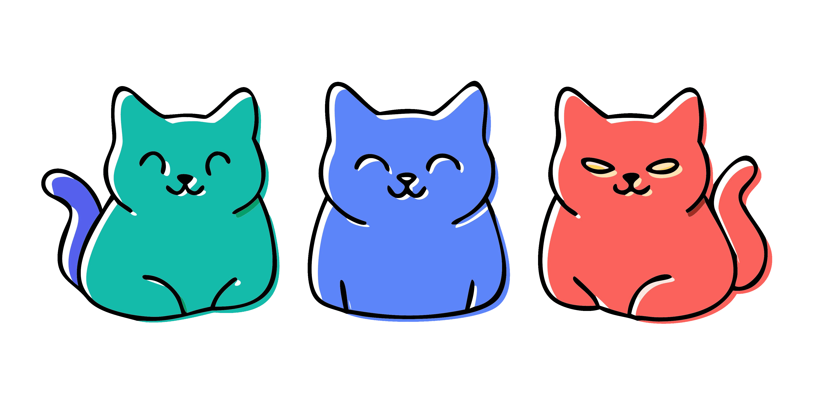
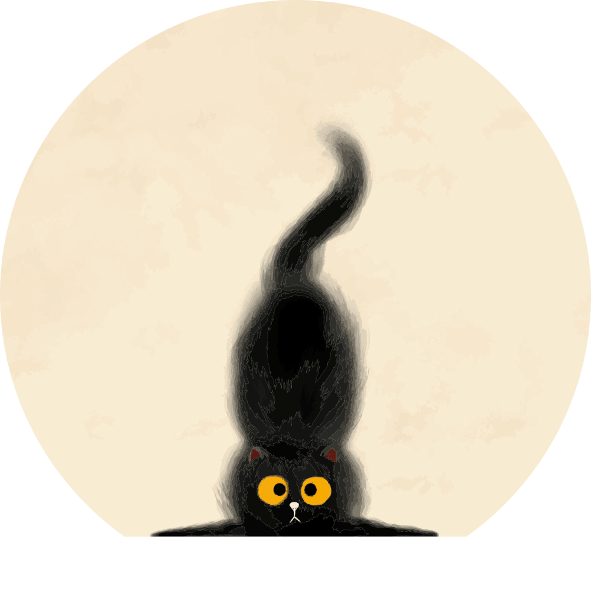

Alla älskar katter

Sedan urminnes tider har alla älskat katter.
Men katterna har inte alltid älskat oss.
Det är en komplicerad kärlek.
Så vad är det då som gör att vi tycker om dem så mycket som vi gör?
Låt oss utforska det tillsammans!



Katter som skadedjurskontroll
En funktion som varit uppskattad sedan begynnelsen av människans kärleksrelation till katten, är deras förmåga och drivkraft att utrota mindre uppskattade djur. Tack vare deras imponerande jaktinstinkter slipper vi både råttor, möss och malar i våra hus. Även om malar inte är ett särskilt stort hot eller någon särskild oangelägenhet, så har vi hellre ett hus utan malar, än ett utan en katt.

Katter som husdjur
Katten är som en liten och hårig psykoterapeut när den väl bestämmer sig för att tillåta oss att röra vid den. På dess egna villkor, så klart. Och att få ens katt förtroende liknar ingenting annat. Det finns faktiskt studier som visar att kattens spinnande inte bara påverkar den själv, utan att vi människor också kan dra nytta av frekvenserna och vibrationerna. Det skulle i alla fall inte förvåna mig, om det är sant.
För att de är så vackra
De allra flesta katter innehar en viss estetik som utan tvekan tilltalar de allra flesta, även om man inte ens tycker om djur. Man kan ändå vara överrens om att katten är vacker, även om man inte uppskattar deras natur. För oavsett utseende, så är kattdjuret också ett djur med stark integritet, selektiv hörsel och fantastisk envishet. Det går inte att få en katt att göra något den inte vill, men medan den trotsar dig ser den åtminstone ut som en egyptisk gud.
Funderar du på att adoptera din första katt till familjen? Ja!
